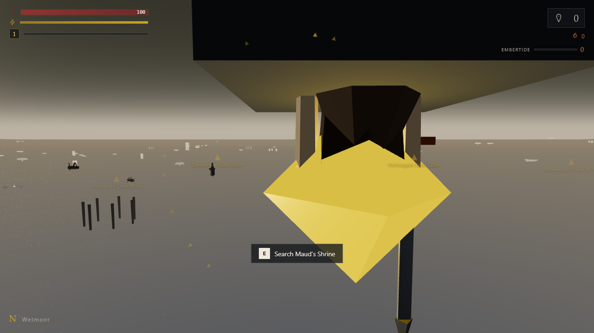
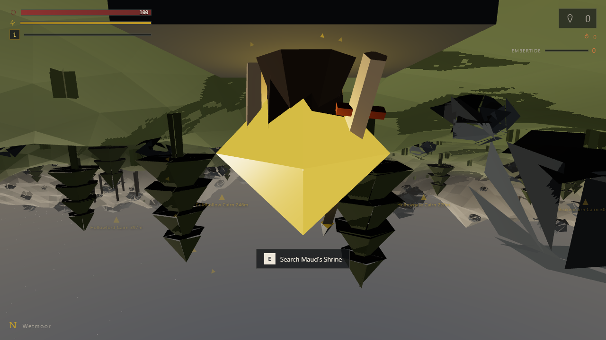

Carry, don't hoard
Every soul you bear is a debt. Bank them at cairns for score, or risk the Embertide for one more before the dark swallows the run.
Browser-native action RPG
The highland burns. The souls of the fallen cling to the living, and the longer you carry them, the heavier the dark grows. Reach the cairns. Lay them to rest. Do not let the embertide take you.
No bearer yet. Your name, souls, and scores live in this browser — the same save the game reads. Step into the highland and they appear here.
Every soul you bear is a debt. Bank them at cairns for score, or risk the Embertide for one more before the dark swallows the run.
Timing-based swings, parries, and dashes. Build a combo, break a guard, and end the Colossus before the embertide peaks.
Procedural highland, ruined shrines, ash-drift storms. Each run is a different stretch of burning land to cross.
Progression, loadouts, and a leaderboard. The run is short; the studio is forever.
Five biomes, one horizon of ash. From the peat lowlands to the cairn ridges, every stretch is hand-tuned and procedurally placed.


Every model, texture, and line of voice is generated in-repo. No stock art. No third-party licences. What you see is ours, down to the last triangle.
A rising tide of difficulty. Enemies hit harder, spawn denser, and the light fades. Bank souls to reset it — or push your luck.
Blade, maul, spear, censer. Each weapon changes reach, swing-time, and stagger. Affix rolls make every drop a choice.
Safe points that bank souls, restore poise, and hold your progress. The world is hostile between them.
A transparent score model rewards banking over hoarding. Daily seeds keep the chase fresh.
Play free in your browser now. Your bearer is waiting on the other side of the fire.